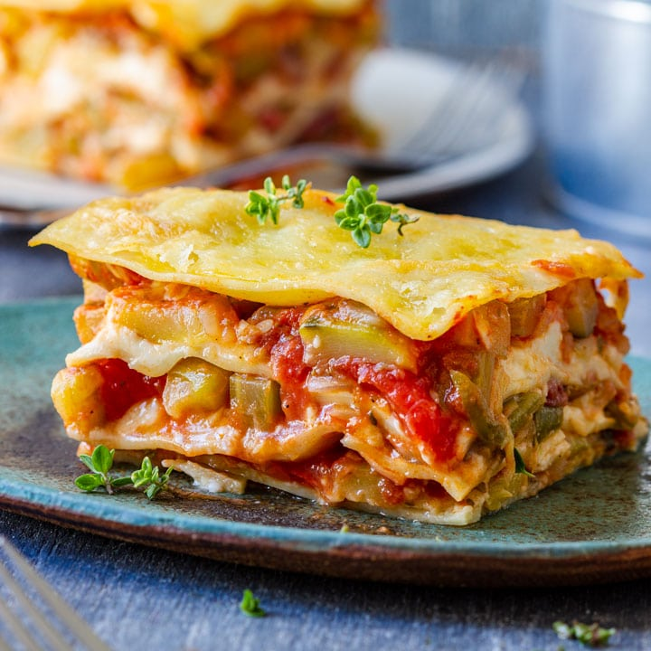

Recipes:
Spaghetti Carbonara:
Classic Italian pasta dish made with eggs, cheese, bacon, and black pepper.

Chicken Stir-Fry:
Quick and flavorful stir-fry recipe with chicken, vegetables, and soy sauce.

Vegetable Lasagna:
Delicious vegetarian lasagna packed with layers of vegetables, cheese, and tomato sauce.
Grilled Salmon:
Healthy and flavorful grilled salmon recipe marinated in lemon and herbs.

Beef Tacos:
Classic Mexican tacos filled with seasoned ground beef, lettuce, cheese, and salsa.

Homemade Pizza:
Easy homemade pizza topped with tomato sauce, cheese, and your favorite toppings.


Caprese Salad:
Simple and refreshing salad made with tomatoes, mozzarella cheese, basil, and balsamic glaze.

Chicken Parmesan:
Classic Italian-American dish with breaded chicken, marinara sauce, and melted cheese.